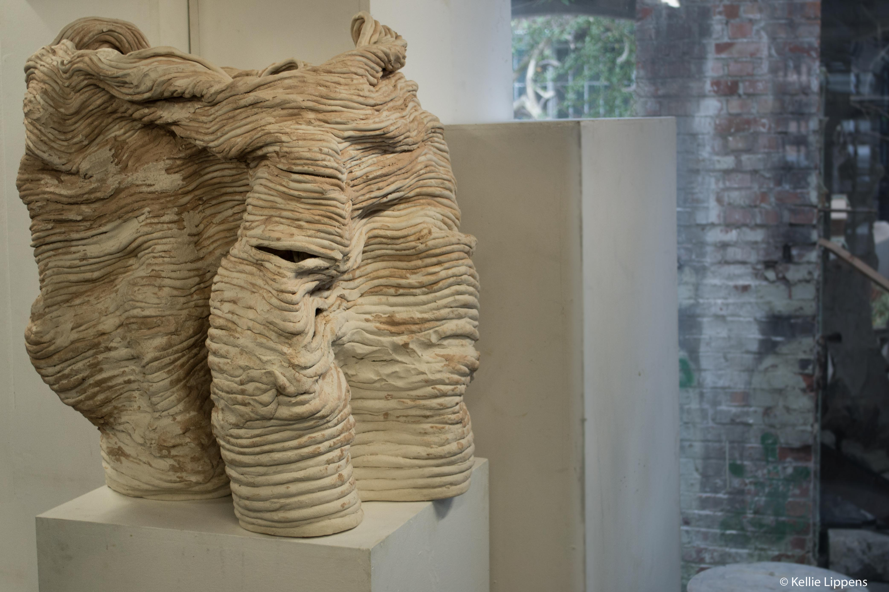

Selfportrait
Ceramics│2017
Self-portrait is a great theme throughout art history. For my own self-portrait I take my weight as a measure. By accepting coincidence in my work, I am open to new influences. The work develops in its own particular way. I built the main body from white clay, but for sticking the coils I have made a mixture of white and black slip so that a new subtle colour hue emerges. It is important that the making process with all its touch marks stay visible.
